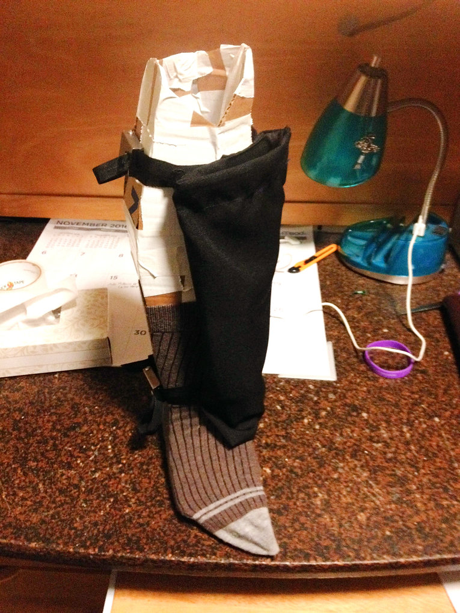
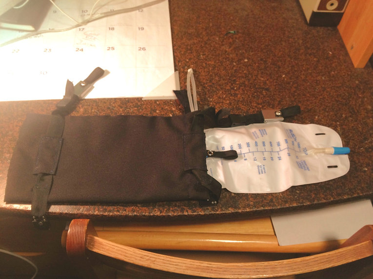
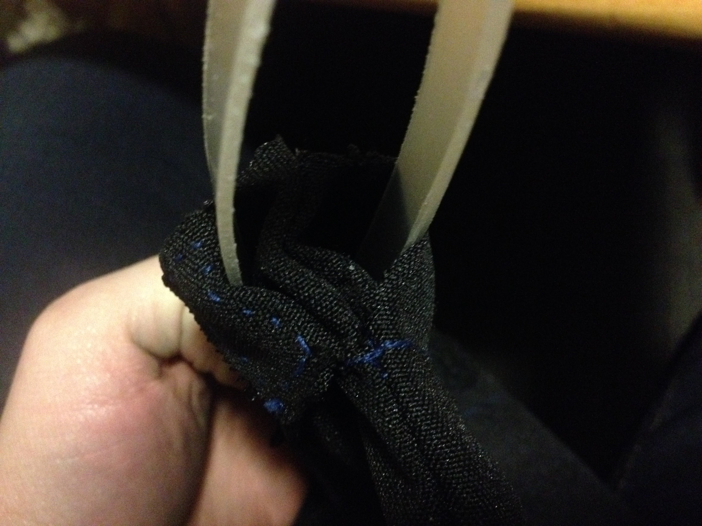
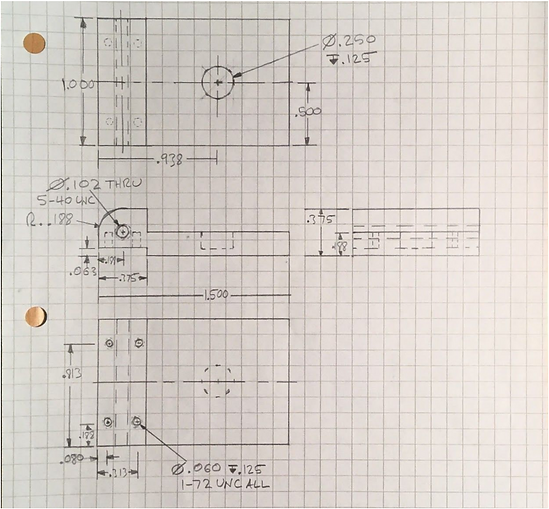
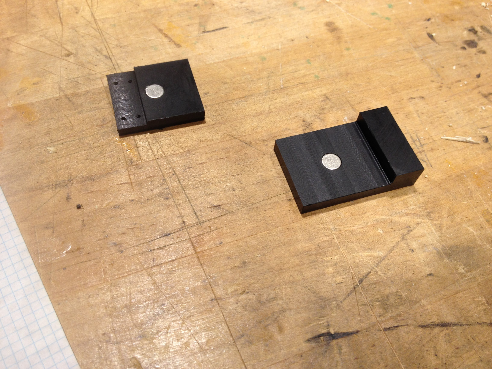
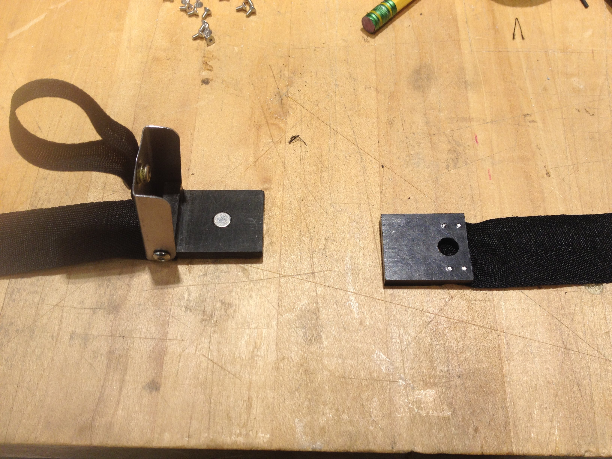
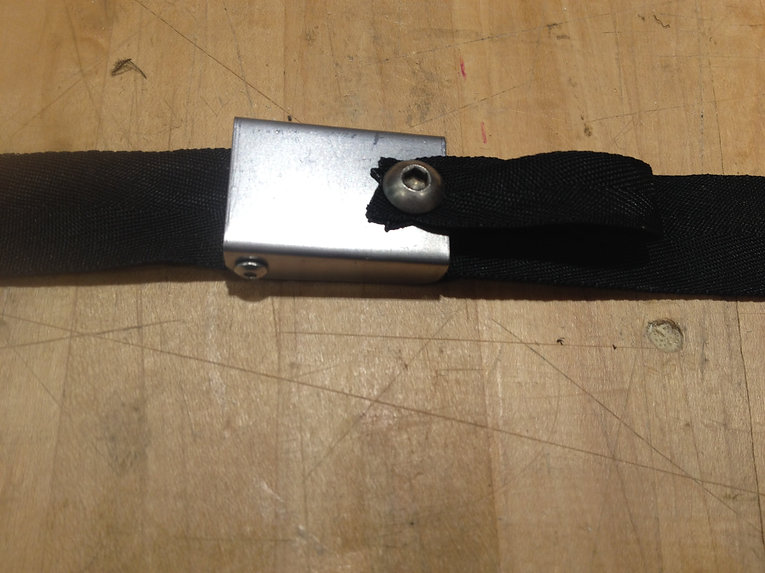

I worked on The Foley Catheter Bag System as part of a freshman design course. I developed it in a team of four for a patient at the Shirley Ryan Ability Lab. Our goal was to create a system for wearing a foley catheter bag that was comfortable and easy to use for someone with limited dexterity.
-
Foley Catheter Bag System
(Fall 2016)The foley system modeled by "Fred" the leg
The cloth pouch is designed to be comfortable against the leg and more discreet than the unsightly foley bag it contains. All rigid parts can be detached to wash the pouch. Though our prototype was hand sewn, future iterations could be made more robust, allowing the pouch to be machine washable.
Features of the foley catheter bag system
Our design also features a removable plastic insert to stiffen the opening of the bag while remaining flexible enough to comfortably conform to the user's leg when pressed back into place against a pair of velcro pads. This allows the foley bag to be removed and emptied throughout the day without having to take off the pouch.
The plastic insert
While I collaborated with my team on the rest of the project, I designed and fabricated the magnetic buckles on my own. My goal was to create a mechanism that could easily be operated by someone with gross motor control, but minimal dexterity.
Rare earth magnets bring the buckles into alignment, after which the user pushes down a steel clasp. This locks everything in place with a retaining pin. A cloth loop attached to the clasp allows the user to open it by simply sliding in a finger and pulling.
See engineering drawings...- 
- 
- 
- 
TL to BR: Projection drawing of the lower buckle, lower and upper buckles mid-fabrication, open buckle, clasped buckle